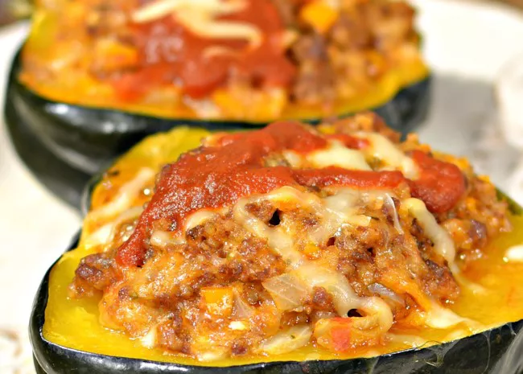
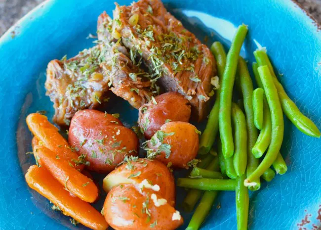
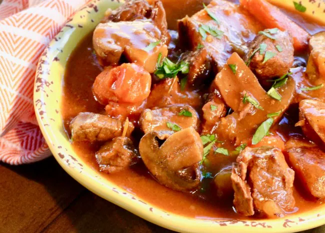
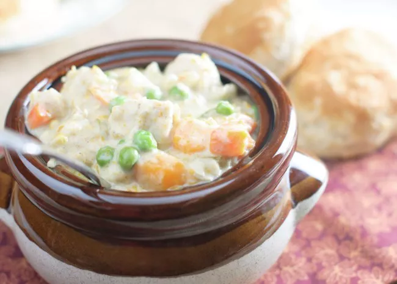
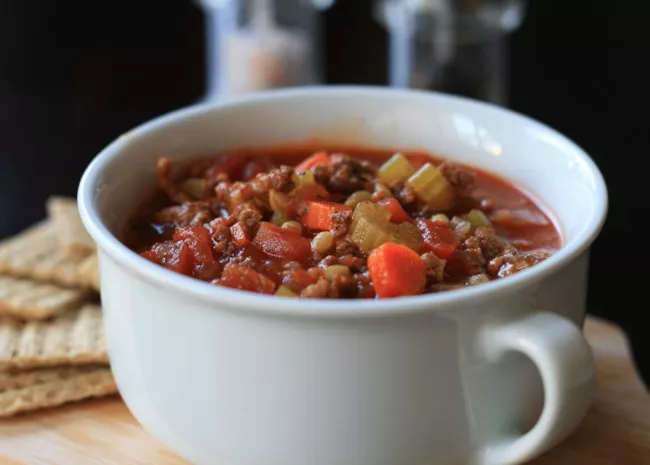
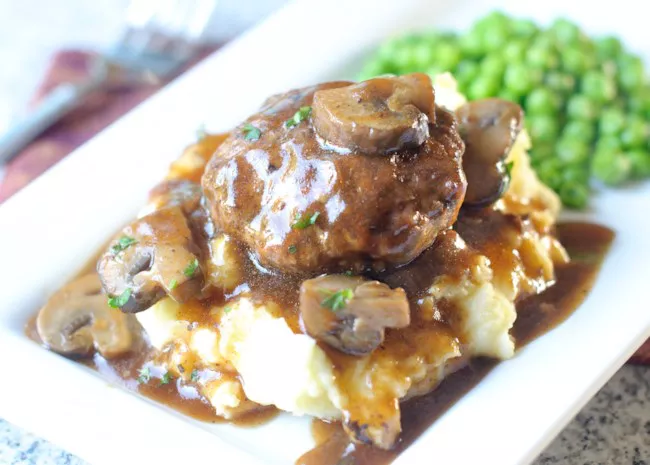
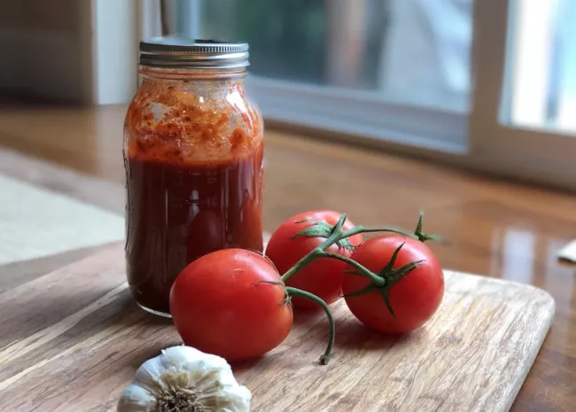

Top 10 New Instant Pot Recipes of 2018
1. Acorn Squash Stuffed with Italian Sausage

Recipe creator, bd.weld, says, "This quick and easy acorn squash stuffed with sausage is an irresistible fall dish, and it's all done in an Instant Pot®."
Frosty Cat, who adapted this recipe for the oven, offers these tips: "Halved the acorn squash and put in a 450 oven for 30 minutes. Cooked the sausage, onion & pepper on the stove, added other ingredients then stuffed the squash. Reduced oven to 400 and baked another 30 - 35 minutes."
2. Baby Back Ribs

"Made exactly as directed," says dmurray256. "This was my first time using the Instant Pot and the ribs were amazing!! Seasoned just right and fall off the bone. Will definitely make again!!"
3. Pork Chops and Gravy
"Excellent! Easy recipe to make," says DYANNA11. "I made mostly as is but added a basket of fresh white mushrooms to the garlic saute step."
4. Pot Roast with Potatoes and Carrots

"We LOVED IT," raves Arizona Desert Flower. "I will admit, I didn't add the veggies in from the beginning. I did the roast for the full 60, then manually released the pressure, added the veggies back in and did them for 10 minutes with immediate release. We like our gravy thicker, so I added a bit more cornstarch. Delicious!"
5. Spicy Butternut Squash Soup
"Made this soup today for a friend," says Nelsonsrus2. "It was so good we had to hold back a batch for ourselves. I would not describe this as spicy, but very tasty."
6. Best Beef Stew

"I have avoided pressure cookers for years," says mspman. "I finally decided to try an electric one. The beef stew was fantastic! The meat was tender and juicy. The vegetables were not soggy. The recipe was easy to follow. I did add an extra carrot. I'll definitely make this dish again."
7. Chicken Pot Pie (Crustless and Gluten-Free)

"After reading others reviews stating it was thin like soup I decided to cut back on the chicken stock to 1 cup. It helped but I still needed to thicken it up with a cornstarch/water mixture. I also upped the seasonings to suit my taste. I did end up serving it with noodles for my husband but I enjoyed it as is. Very easy to make." — KGora
8. Hamburger Soup

"This is a great soup, and it makes a lot. If you're someone that likes leftovers, this is for you," says France C. "Make sure you use pearl barley because hulled barley will be chewy, and quick barley will be mushy."
9. Salisbury Steak with Onion and Mushroom Gravy

Recipe creator, Bren, describes this as "Just like Mom used to make, but much faster." Aussie Mitch raves, "Delicious and easy. Stuck to the recipe, couldn't be better, served it on a bed of sweet potato mash with peas and corn."
10. Quick and Easy Spaghetti Sauce

"I've tried making spaghetti sauce a few times in the instant pot," says maryb5124. "This recipe was my favorite so far (and the only one my kids didn't complain tasted 'weird'). The only thing I changed was using fresh basil, and I added about a teaspoon of sugar."